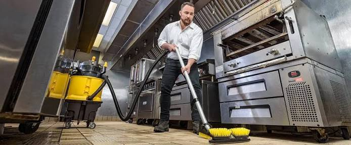
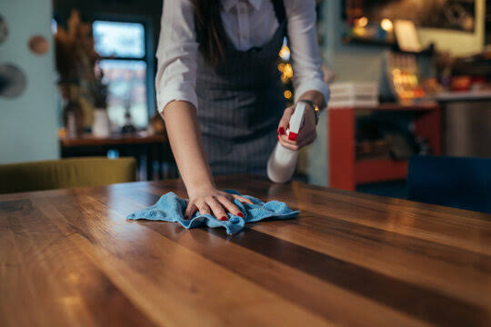

Restaurant Cleaning Services in Banani, Dhaka – Your Spotless Dining Solution
First Impressions Matter! Keep Your Restaurant Exclusive with BSGM&CS-LLC.
- Trusted by Banani's Top Restaurants[cite: 13]
- Deep Cleaning & Daily Maintenance[cite: 13]
- Available for 24/7 Emergency Service[cite: 13]
- 100% Satisfaction Guarantee[cite: 13]
Schedule Your Appointment Today and Enjoy Your Service!
GET 15% OFF BSGM&CS-LLC
Best Restaurant Cleaning Services In Banani, Dhaka.
Imagine walking into a restaurant, what's the first thing you notice? The cleanliness of the restaurant. A spotless dining area, clean tables, and fresh-smelling restrooms. On the other hand, sticky menus, messy floors, or foul odors can deter customers before they even try your food[cite: 14]. In Banani, Dhaka, BSGM&CS-LLC offers premium-quality restaurant cleaning services[cite: 14]. We are trusted service providers to the majority of restaurant owners in Banani[cite: 14]. We only use food-safe, non-toxic cleaners that are safe for people, even those with allergies, which sets us apart from others[cite: 14]. Our team is well-trained in restaurant environments and knows exactly how to tackle stubborn spots[cite: 14].
Benefits of Our Restaurant Cleaning Services In Banani, Dhaka[cite: 14].
Daily Restaurant Cleaning – Keep It Fresh Every Shift
Consistency is key. Our daily cleaning ensures your restaurant looks best every single day. Keeping your restaurant spotless daily will save your brand reputation[cite: 14].
In the kitchen, we tackle grease and grime on floors, countertops, and appliances, while also maintaining grease traps to prevent fire hazards[cite: 15]. And let’s not forget the restrooms, we clean and refresh them, so they never become a bad experience for customers[cite: 15]. Even your waste areas stay clean and odor-free, because every corner of your restaurant reflects your standards[cite: 15].
Deep Cleaning – Kitchen Revival!
Over time, grease, oil, and food leftovers build up in places you can’t reach with regular cleaning. Our deep cleaning services bring your kitchen back to life[cite: 15]. We strip away stubborn grease from grills, fryers, and ovens, restore them to like-new condition[cite: 15]. We clean hood vents thoroughly to improve ventilation and reduce fire hazards[cite: 15]. We scrub floors and grout to remove deep-set stains[cite: 15]. With BSGM&CS-LLC, deep cleaning a kitchen not only looks better but also operates more safely and efficiently[cite: 15].
Special Cleaning – For Unique Challenges
Sometimes, restaurants face cleaning challenges that go beyond the usual routine. Maybe you’ve just finished reorganization and need construction dust removed[cite: 15]. And if you’re prepping for pest control and need every trace of food leftovers removed, we can help with every challenge[cite: 15]. Our special services cover these unique situations with care[cite: 15]. No matter the challenge, we have the right tools and expertise to keep your restaurant looking outstanding inside and out[cite: 15].
Affordable Pricing
We offer premium restaurant cleaning services in a budget-friendly way[cite: 15]. No hidden charges, what you see is what you pay[cite: 15]. With our affordable service, you can clean your restaurant and showcase your unique standard in maintaining it[cite: 15].

Why Professional Restaurant Cleaning Matters
Keeping a restaurant clean isn't just about looking good. It's about running a smoother, safer, and more successful business. Consider this: when your kitchen and dining areas meet Banani's strict hygiene standards, it attracts more customers. Your customers notice a spotless environment, from germ-free tables to sanitized restrooms, and that keeps them coming back.
Why BSGM&CS-LLC is Your Best Choice for Restaurant Cleaning in Banani, Dhaka
We know that you've a lot of options when it comes to cleaning services. But here's what makes us different:
We only use food-safe, non-toxic cleaners that the local authority has approved, so you never have to worry about harmful chemicals near your kitchen. Our team isn't just any cleaners; they're specially trained in restaurant environments. They know precisely how to tackle stubborn kitchen grease and high-traffic dining areas. Do you need us to work around your busy schedule? No problem, we're available 24/7, whether that means early morning cleanups before you open or late-night deep cleaning after service.
Our experts are masters in health codes, so you can be confident you'll pass inspections with flying colors. And the best part? We deliver premium cleaning quality without the premium price tag. Our cleaning services are affordable and hassle-free.
Testimonials
BSGM&CS-LLC transformed our kitchen from greasy to gleaming! Their deep cleaning service removed years of built-up grime we couldn't tackle ourselves. Now our hood vents are spotless, and the entire team notices the difference. They work around our late-night schedule perfectly. Health inspections have never been smoother – we've achieved perfect scores three times in a row!
I was skeptical at first, but after BSGM&CS-LLC first cleaning, my staff and customers immediately noticed the change. Their attention to detail is incredible – they even clean under equipment we hadn't moved in years! The dining area sparkles every morning when we open. It's the best investment we've made for our café's reputation. Their prices are surprisingly reasonable as well.
Managing multiple locations was a cleaning nightmare until we hired BSGM&CS-LLC . Their systematic approach ensures every location meets our high standards. They caught fire hazards we didn't know existed during their deep clean. The 24/7 availability is a game-changer for our 24-hour locations. We've reduced equipment repairs by 30% since starting with them!